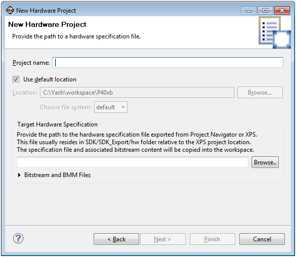

Xilinx embedded hardware
Xilinx embedded software
When you create a new SDK workspace, use the Hardware Platform Specification File dialog box to specify the hardware platform specification file to use for creating software projects. You can create a Hardware Specification Project by selecting File > New Project > Xilinx > Hardware Platform Specification.

In the Project name field, type the name to use for your hardware platform project.
To specify a location for your project, unselect the Use default location check box and type or browse to a location in the Location field. Otherwise, your project will be saved in the default location.
In the Target Hardware Specification field, type or browse to the hardware platform specification file of the hardware design generated in XPS.
Xilinx embedded hardware
Xilinx embedded software

Importing a hardware platform specification file
Monitoring hardware project changes
Re-targeting software projects
Copyright © 1995-2013 Xilinx, Inc. All rights reserved.